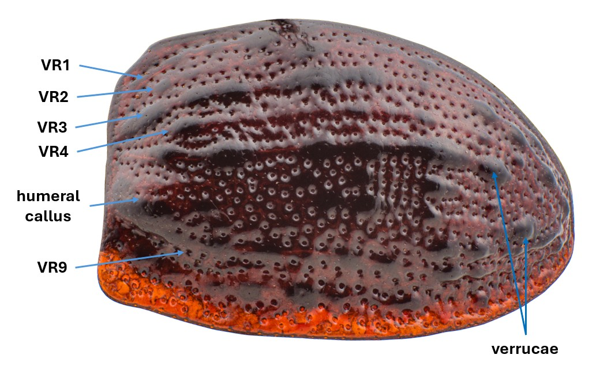

TrachymelaID
TrachymelaID
TrachymelaID
TrachymelaID
The elytra (wing covers) have many of the most useful characters in characterizing different species of Trachymela. The elytra are divided into two regions, the disc and the marginal area. Major features are the puncturation, the verrucae (warty elevations), the width of the marginal region, the humeral callus, the nature of the surface around the elytral summit, the presence or absence of a shallow depression in the basal half and the presence of transverse ridges.
Note that in Trachymela, the elytron has 20 or so rows of punctures, divided by interstices, and the verrucae are located on these interstices. In Fig. 1, the first four interstices are labelled VR1 to VR4. The photo clearly shows the two rows of punctures between adjacent interstices.

The following will deal with each of these in turn:
The eltra are divided into two main regions, the disc and the lateral margin. The boundary between these is often marked by a depression (the marginal sulcus) running parallel to the lateral margin. The curvature of the surface of the disc can continue at about the same rate across the marginal sulcus, or the marginal area can be out-turned (explanate). A useful character in separating species is the width of the marginal area, and can be estimated by measing the distance between the humeral callus and the lateral margin.
Many species have a noticeable but shallow depression in the surface just anterior to the mid-line (the antemedian depression). This depression often has a lower density of verrucae than the area on either side of it. Often, the density of verrucae is highest just posterior to the depression.
The layout of the verrucae can be quite variable. For example, some species have , while others have where their placement in interstices is quite difficult to discern.
Verrucae are placed in longitudinal series, which are labelled VR1 to VR10, from the elytral suture outwards. VR3 (which is positioned halfway between the scutellum and humeral callus) is usually the most prominent of these and often extends to the anterior edge of the elytron. Along these series, the verrucae can be arranged in a multitude of ways that are usually species specific. Individual verrucae can be small and discrete, or they may be joined into longitudinal ridges.The rugosity of the elytral disc in many species includes small lateral ridges. These often emanate from verrucae that are extended laterally. Sometimes these ridges extend over several interstices. In a small group of species, there is a much more extended and prominent transverse ridge that extends almost from the elytral suture to the lateral edge of the disc, sometimes even across the marginal area. It is situated just posterior to the antemedian depression and may be uninterrupted or composed of two or more sections.
Back to User Guide